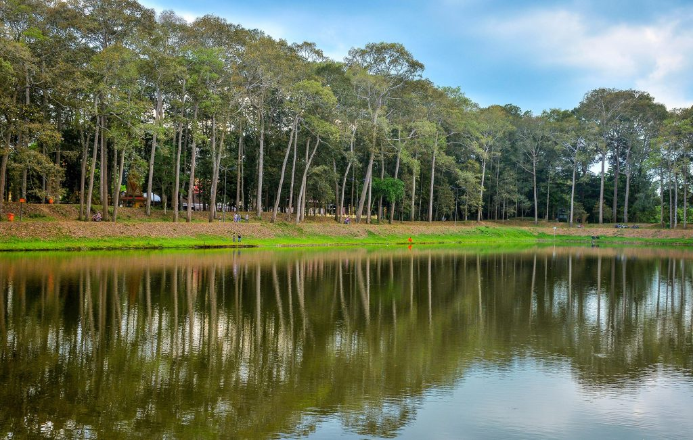

Nhắc tới Trà Vinh, người ta nghĩ đến mảnh đất của những ngôi chùa Khmer cổ kính cùng những di tích lịch sử mang nhiều truyền thuyết huyền thoại, gắn liền với hành trình khai phá, gầy dựng phương Nam. Di tích ao Bà Om ngàn năm soi bóng cổ tự là một trong những niềm tự hào của người dân nơi đây.
Ao Bà Om, hay Ao Vuông nằm cạnh Quốc lộ 53, thuộc phường 8 thành phố Trà Vinh (trước đây là ấp Tà Cụ, xã Nguyệt Hóa, huyện Châu Thành), cách trung tâm thành phố Trà Vinh khoảng 5 km về phía Tây Nam.
Du lịch Trà Vinh đến đây, bạn không đơn thuần chỉ được chiêm ngưỡng vẻ đẹp thơ mộng của thiên nhiên mà còn được cảm nhận rõ nét hơn những giá trị văn hoá độc đáo của vùng đất Trà Vinh qua câu chuyện mang đậm màu sắc Khmer Nam Bộ...
Ấn tượng đầu tiên khi tới thăm ao Bà Om là cảm giác mát mẻ trước cảnh trời nước xanh biếc một màu. Ao có hình chữ nhật, rộng 300m, dài 500m (vì gần với hình vuông nên còn được gọi là Ao Vuông) khách sẽ bất ngờ vì ao lớn quá, phải gọi là hồ thì đúng hơn.
Bao bọc xung quanh trên bờ ao là rừng cây cổ thụ, đa số là cây sao, cây dầu hàng trăm năm tuổi, có rễ xù xì trồi lên mặt đất cả mét thành những hình thù lạ mắt bốn mùa rợp bóng thâm u tạo không gian thanh bình, yên tĩnh.
Có bộ rễ lớn đến nỗi có thể tạo thành cái hang độc nhất vô nhị, trẻ con có thể chui vào vui chơi. Lại có bộ rễ cây trở thành ghế ngồi nghỉ chân của khách. Người bản xứ lý giải rằng, những bộ rễ đồ sộ, quấn lấy nhau và nằm trên cao cách mặt đất như ngày nay là do khu đất xung quanh ao bị sụt lún xuống thấp, rễ cây lộ thiên và phát triển theo thời gian.
Kích cỡ khổng lồ và hình thù kỳ dị của các bộ rễ cây ở ao Bà Om khiến nhiều người liên tưởng đến một cánh rừng cổ tích.

Nếu đến đúng mùa thì ao còn được tô điểm bởi những bông sen hồng, bông súng lãng mạn.

Ngoài cảnh đẹp đến mê mẩn lòng người, ao nước rộng lớn này còn lung linh huyền ảo bởi những câu chuyện nửa hư nửa thực từ bao đời nay ăn sâu vào tiềm thức người dân địa phương.
Theo truyền thuyết ngày trước, vùng đất Trà Vinh hằng năm cứ đến mùa hạn thì nước ngọt khan hiếm, ruộng rẫy khô cằn, cây cỏ chết héo, người dân trong vùng vì hạn hán rơi vào cảnh lầm than. Để cứu dân khỏi cảnh khốn cùng, một ông hoàng trấn nhậm trong vùng quy tụ bà con đào ao tìm nguồn nước.
Tình cờ, trong vùng lúc đó cũng xảy ra một vụ tranh cãi khó phân xử là đàn ông và đàn bà, ai phải đi cưới ai và ai phải chịu mọi phí tổn trong lễ cưới? Ông hoàng nhân dịp này chia ra hai bên nam nữ tổ chức một cuộc thi đào ao. Ao bên nào đào sâu hơn, lớn hơn và xong trước thì thắng, bên thua sẽ phải đi cưới.
Bên nam thì đào ao tròn ở phía Tây còn bên nữ đào ao vuông ở phía Đông. Bên nữ do bà Om, một phụ nữ Khmer chỉ huy, thấy không thể kình được sức đàn ông nên bên nữ dùng “kế”: Họ vừa đào vừa ca múa để các chàng bỏ việc mà chạy sang xem. Nửa đêm, bà Om cho chặt một cây tre thật dài, treo ngọn đèn lồng rồi đem cắm ở hướng Đông. Theo giao hẹn là khi sao Mai mọc là phải ngừng công việc, khi bên nam thấy ngọn đèn tưởng là sao Mai nên họ rủ nhau về nghỉ. Trong lúc đó bên nữ đào đến sáng và xong việc trước. Bên nam thua cuộc trong sự “tâm phục, khẩu phục”. Để nhớ ơn người phụ nữ mưu trí, người ta lấy tên bà đặt tên ao, từ đó ao phụ nữ đào được gọi là ao Bà Om. Và truyền thống nam đi cưới nữ, con phải lấy họ mẹ trong dân tộc Khmer cũng bắt đầu từ đây. Mãi đến sau này khi người Pháp cai trị nước ta thì con mới lấy theo họ cha.
Cũng giải thích cho tên gọi ao Bà Om còn có một câu chuyện khác: Xưa kia có một vị hoàng tử rất độc ác trấn nhậm vùng đất Trà Vinh, bắt dân chúng phải dâng gái đẹp cho ông ta, ai bất tuân sẽ bị trừng trị nặng. Vị hoàng tử này buộc phụ nữ phải đem lễ vật đi cưới đàn ông. Một hôm, có một cô gái xinh đẹp đến gặp hoàng tử để bày tỏ sự phản đối về tập tục bất hợp lý này. Vì bị lôi cuốn bởi vẻ đẹp của cô gái nên hoàng tử muốn làm vừa lòng người đẹp, vừa muốn xóa bỏ tập tục mình đặt ra bằng cách cho mở một cuộc thi đào ao. Sau đó mọi chuyện diễn ra như chuyện kể trên.
Theo các nhà sử học và nghiên cứu văn hóa dân gian thì có khoảng 10 dị bản để giải thích địa danh ao Bà Om gồm đủ các thể loại của truyện kể dân gian như: truyện cổ tích, truyện dã sử, truyền thuyết, giai thoại… Có thể nói đây là một trường hợp có nhiều giả thuyết nhất về tên gọi địa danh ở Đồng bằng sông Cửu Long. Xét về mặt nội dung hầu hết các chuyện xung quanh 3 chủ đề chính: Giải thích tên gọi Ao Bà Om, lý giải người nam đi cưới người nữ và tại sao người Khmer có tục lệ theo họ mẹ? Các chuyện kể đều là sản phẩm của trí tưởng tượng mang đậm dấu ấn văn hóa của người Khmer ở Nam Bộ.
Khi nắng chiều buông xuống trên những hàng cây cổ thụ cao vút, thâm u, dài xa tít tắp thì Ao Bà Om chính là nơi dạo chơi lý tưởng nhất ở thành phố Trà Vinh.
Hai bên con đường chính dẫn vào Ao Bà Om là một khu “chợ trời” ẩm thực rất nhộn nhịp, đông vui. Du khách có thể tản bộ ngắm cảnh và khi nào cảm thấy “xót ruột” thì ghé vào một gánh hàng rong, hoặc một quán ăn nhỏ gọn để thưởng thức những món ẩm thực nổi tiếng của Trà Vinh như đá bào sữa, bún mắm, bánh canh, bún cà ri, bánh thốt nốt… món ăn nào giá cả cũng rất mềm.
Vào những ngày lễ, tết hàng năm của người Khmer, ao Bà Om trở thành nơi sinh hoạt cộng đồng náo nhiệt của cả vùng, nhất là vào Lễ hội Ok Om Bok được tổ chức vào rằm tháng 10 Âm lịch, thu hút hàng ngàn người dân khắp nơi về đây tham dự. Họ cùng nhau nhảy múa, xem hát Dù kê, …thắt chặt thêm tình đoàn kết, hòa hợp các dân tộc anh em ở vùng sông nước Cửu Long. Và khi màn đêm buông xuống, khu vực Ao Bà Om lung linh, huyền ảo, náo nhiệt với Hội thả đèn gió, có rất nhiều loại đèn đủ kích cỡ được thả bay lên trời mang theo lời khấn nguyện, ước mong trời đất giao hòa, mùa màng tốt tươi, con người và vạn vật bình yên, dồi dào sức khỏe.
Bên cạnh ao là ngôi chùa Âng, một trong những ngôi chùa Khmer cổ nhất Trà Vinh được xây dựng từ năm 990, và Bảo tàng văn hoá Khmer cũng được đặt ở đây.
Ao Bà Om được Bộ Văn hóa Thông tin công nhận là di tích lịch sử văn hóa cấp quốc gia vào năm 1994. Cùng với bảo tàng văn hóa và chùa Âng, bộ 3 quần thể danh thắng này là một trong những điểm không thể bỏ lỡ khi tới thăm Trà Vinh. Nếu đang phân vân tìm một điểm đến cho kì nghỉ sắp tới, thì Trà Vinh với Ao Bà Om chính là một điểm đến lý tưởng cho du khách.